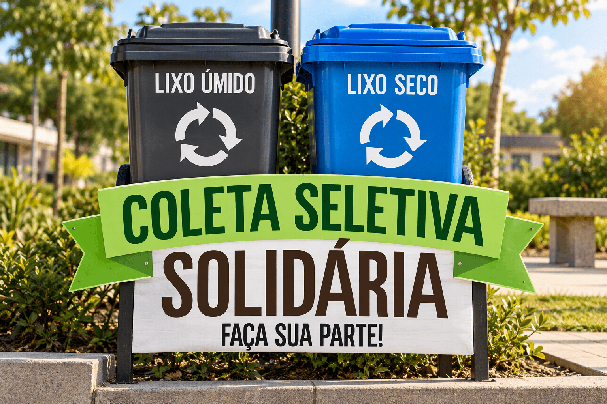
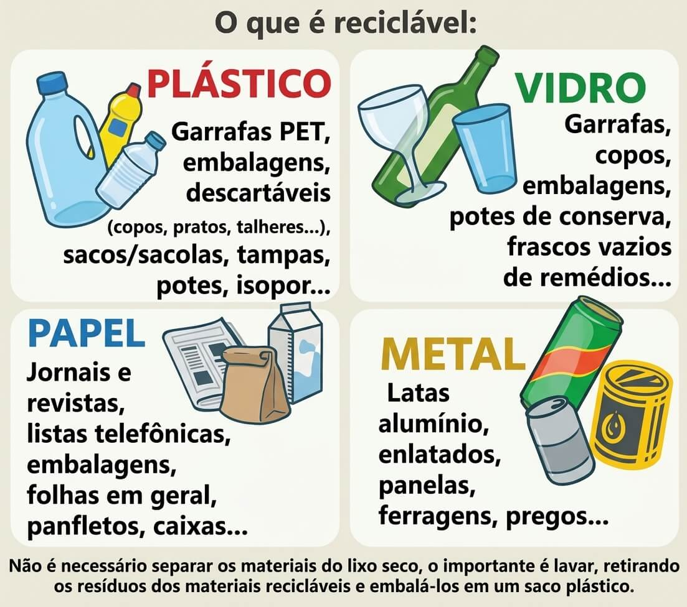
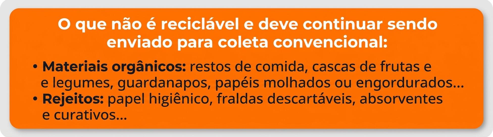

Cooperativa EcoAmparo: Coleta Seletiva e Ponto Ecológico
A sustentabilidade começa dentro das nossas casas e se fortalece quando toda a comunidade participa. A Cooperativa EcoAmparo atua na coleta, triagem e destinação correta de materiais recicláveis em nossa cidade, evitando que recursos valiosos acabem em aterros sanitários e gerando trabalho, renda e qualidade de vida para todos.

O que é reciclável? (Lixo Seco)
Para contribuir com a coleta seletiva e com o meio ambiente, o primeiro passo é separar os materiais recicláveis secos.
- Plástico
- Vidro
- Papel

Dica extra: óleo de cozinha usado
O óleo de cozinha usado também é reciclável! Nunca jogue no ralo ou no solo. Após esfriar, armazene o óleo em uma garrafa PET bem fechada para enviá-lo junto com os recicláveis.
O que não é reciclável? (Lixo Úmido e Rejeitos)
Alguns materiais não podem ser reaproveitados pela coleta seletiva e devem continuar sendo enviados para a coleta convencional (lixo comum):
- Materiais orgânicos: restos de comida, cascas de frutas e legumes, guardanapos, papéis molhados ou engordurados. Dica: esses itens podem ser aproveitados na compostagem doméstica.
- Rejeitos: papel higiênico, fraldas descartáveis, absorventes, curativos, entre outros.

Como e quando colocar para coleta?
Acompanhe o cronograma da coleta seletiva do seu município e coloque o resíduo seco (reciclável) mais a garrafa PET com óleo de cozinha usado na calçada apenas no dia e horário da coleta do seu bairro.
Resíduos especiais e logística reversa (Lei nº 12.305/10)
Atenção: de acordo com a Política Nacional de Resíduos Sólidos (Lei nº 12.305/10), alguns materiais contêm substâncias contaminantes e não devem ser misturados ao lixo comum nem aos recicláveis. Eles precisam ser separados e devolvidos corretamente:
- Agrotóxicos
- Óleos lubrificantes
- Lâmpadas fluorescentes
- Produtos eletroeletrônicos
- Pilhas e baterias
- Pneus
Como devolver cada tipo de resíduo
Lâmpadas fluorescentes
Agrotóxicos
Óleos lubrificantes
Ponto Ecológico: Cooperativa EcoAmparo
A Cooperativa EcoAmparo é um Ecoponto oficial da Prefeitura Municipal de Amparo. Recebemos gratuitamente os seguintes resíduos previstos na Lei nº 12.305/10:
- Pilhas
- Lâmpadas
- Pneus
- Eletroeletrônicos
- Recebimento
- De segunda a sexta-feira, das 8h00 às 17h00.
- Local
- Rua Suécia, 200 – Loteamento Nardini – Amparo/SP.

Faça a sua parte!
Separe seus resíduos e ajude a Cooperativa EcoAmparo a construir uma cidade mais limpa e sustentável.
Voltar ao início do guia